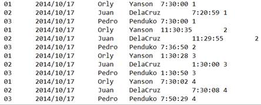
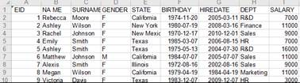

Description:
External library function (See External Library Guide); fit together matrices using PLS technique.
Syntax:
pls(A,Y,n) Fit matrix A and matrix/vector Y using the PLS technique; matrix A contains more than one row and both A and Y should have same number of rows; n is the number of principal components. The type of result is determined by Y, that is to say, the function returns a matrix when Y is a matix and a vector when Y is a vector. The return result can be used as parameter F in pls(A¡¯,F) to perform a fitting
pls(A¡¯,F) Get fitting object of matrices having same number of columns, that is, perform prediction on A¡¯ using coefficient information in a fitting result
Parameters:
|
A |
A matrix |
|
Y |
A matrix/vector |
|
n |
Number of principal components; the range of its values is 1<=n<=min(row count -1,column count). When the parameter is absent or out of range, its value will be automatically configured as the maximum in the above range |
|
A¡¯ |
A matrix/vector |
|
F |
A matrix/vector, the result returned by pls(A,Y,n) |
Return value:
A vector/single value/matrix
Example:
|
|
A |
|
|
1 |
[[4,6,2,4],[2,3,1,2],[1,1,1,-1]] |
|
|
2 |
[1,0,-4] |
Here parameter Y is a vector |
|
3 |
=pls(A1,A2,2) |
 Fit matrix A1 and vector A2 using the PLS technique and return a vector; the number of principle components is 2
|
|
4 |
[[3,5,-2,8],[2,4,3,3]] |
|
|
5 |
=pls(A4,A3) |
Perform prediction on A4 using fitting result returned by A3 |
|
6 |
[[1,-2,1],[0,2,-8],[-4,5,9]] |
Here parameter Y is a matrix |
|
7 |
=pls(A1,A6,2) |
Fit together matrix A1 and matrix A6 using PLS technique, with the principle component is 2, and return the fitting coefficient matrix |
|
8 |
=pls(A4,A7) |
 Perform prediction on A4 using fitting result returned by A7 and return prediction result |